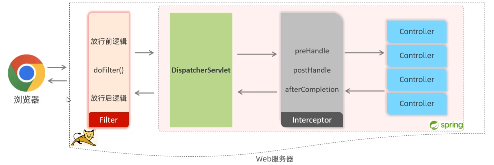

登录校验与认证
（原创）登录校验与认证
1. 登录认证
1.1 会话技术
定义
浏览器与服务器之间的一次连接。会话从用户打开浏览器访问服务器开始，到关闭浏览器结束。一次会话中可以包含多次请求响应。
1.2 会话跟踪
定义
服务器要识别多次请求是否来自同一浏览器，以便在同一次会话的多次请求间共享数据。
1.3 会话技术分类
1. 客户端会话跟踪技术：cookie
- 优点：HTTP协议中支持的技术，自动执行。
- 缺点：1.移动端app无法使用。2.不安全，用户可以自己禁用cookie。3.不能跨域（跨域的三个维度：协议、 IP/域名、端口）。
2. 服务端会话跟踪技术：session
- 优点：1.存储在服务端，安全。
- 缺点：1.服务器集群环境下无法直接使用Session。2.cookie的缺点。
3. 客户端会话跟踪技术: 令牌技术
- 优点：1.PC端、移动端app都可以使用。2.不依赖cookie，可以跨域。3.解决集群环境下的认证问题。3.减轻服务器端存储压力。
- 缺点：1.需要自己实现认证逻辑。
1.2 令牌技术详解
1.2.1 JWT
定义
JSON Web Token，是一种跨域认证解决方案。
1.2.2 JWT组成
- Header：头部，包含令牌类型和所使用的加密算法。
- Payload：载荷，包含需要传递的数据。
- Signature：签名，对Header和Payload进行加密。
1.2.3 JWT使用
- 生成：服务器生成JWT，返回给客户端。
- 校验：客户端每次请求时，携带JWT。
- 解析：服务器解析JWT，获取数据。
1.3 过滤器Filter（tomcat提供）
1.3.1 执行流程
- 1.请求->放行前逻辑->放行->资源->放行后逻辑。
1.3.2 拦截路径
- 在Filter类中配置拦截路径：
@WebFilter("/*")
举例： /*可以替换为/login，表示只拦截login请求。
1.3.3 过滤器链
定义
一个web应用中，配置了多个过滤器，多个过滤器组成一个过滤器链。
注意
过滤器链中，执行优先级是按照过滤器类名（字符串）的字母顺序排序。
1.4 拦截器Interceptor（spring提供）
1.4.1
定义
拦截器是SpringMVC提供的一种动态拦截方法调用的机制。作用是拦截请求，在指定的方法调用前后，根据业务需要执行预先设定的代码。
1.4.2 拦截路径
- 在拦截器类中配置拦截路径：
@Override
//addPathPatterns表示需要拦截的路径
//excludePathPatterns表示不需要拦截的路径
public boolean addInterceptor(InterceptorRegistry registry) {
registry.addInterceptor(new LoginInterceptor()).addPathPatterns("/**").excludePathPatterns("/login");
return true;
}
/*: 一级路径
/**: 所有路径
/dept/*: dept下所有路径，不包括子路径
/dept/**: dept下所有路径，包括子路径
1.4.3 interceptor执行流程

1.5 拦截器interceptor与过滤器Filter的区别
- 1.接口规范不同：过滤器需要实现Filter接口。拦截器需要实现HandlerInterceptor接口。
- 2.拦截范围不同：过滤器能拦截所有资源。拦截器只能拦截spring环境中的资源。
1.6 异常处理
1.6.1 全局异常处理
定义
在SpringMVC中，通过使用@ControllerAdvice注解，可以定义一个全局异常处理类，用于处理整个应用程序中的异常。
使用
- 1.定义全局异常处理类，并使用@ControllerAdvice注解。
- 2.在全局异常处理类中，定义异常处理方法，并使用@ExceptionHandler注解。
- 3.在异常处理方法中，处理异常，并返回相应的结果。
示例
@ControllerAdvice
public class GlobalExceptionHandler {
@ExceptionHandler(Exception.class)
public String handleException(Exception e) {
// 处理异常，并返回相应的结果
return "error";
}
}
问：httpservletrequest和servletrequest有什么区别？
答：HttpServletRequest 和 ServletRequest 都是 Java Servlet API 中的接口，但它们之间存在一些关键的区别：
- 继承关系:
ServletRequest是一个抽象类，它是所有特定于协议的 Servlet 请求对象的超类。它定义了所有 Servlet 请求共有的基本属性和方法。-
HttpServletRequest是ServletRequest的子接口，专门为处理 HTTP 请求而设计。它继承了ServletRequest的所有方法，并添加了一些特定于 HTTP 协议的方法。 -
功能范围:
ServletRequest提供了获取请求参数、属性、输入流等基本功能，但它不包含任何特定于 HTTP 的方法。-
HttpServletRequest除了包含ServletRequest的所有功能外，还提供了许多特定于 HTTP 的方法，如获取请求头、请求方法（GET、POST 等）、请求路径、查询字符串、客户端地址等。 -
使用场景:
- 如果你的 Servlet 需要处理多种类型的请求（例如，HTTP、HTTPS 或其他自定义协议），你可以使用
ServletRequest作为参数类型，以保持代码的通用性。 -
如果你的 Servlet 专门处理 HTTP 请求，使用
HttpServletRequest作为参数类型可以提供更丰富的功能和更好的类型安全性。 -
类型转换:
- 在某些情况下，你可能需要从
ServletRequest转换到HttpServletRequest。这通常发生在一个通用的 Servlet 框架中，你需要处理特定的 HTTP 请求特性。这可以通过类型检查和转换来实现，例如：java if (request instanceof HttpServletRequest) { HttpServletRequest httpRequest = (HttpServletRequest) request; // 使用 HttpServletRequest 的特定方法 }
总结来说，HttpServletRequest 是 ServletRequest 的一个扩展，专门为 HTTP 请求提供额外的功能。在实际开发中，你应该根据 Servlet 的具体需求选择使用哪一个接口。如果你的 Servlet 只处理 HTTP 请求，使用 HttpServletRequest 会更方便和直观。如果你需要编写更通用的代码，可以处理多种类型的请求，那么使用 ServletRequest 可能更合适。